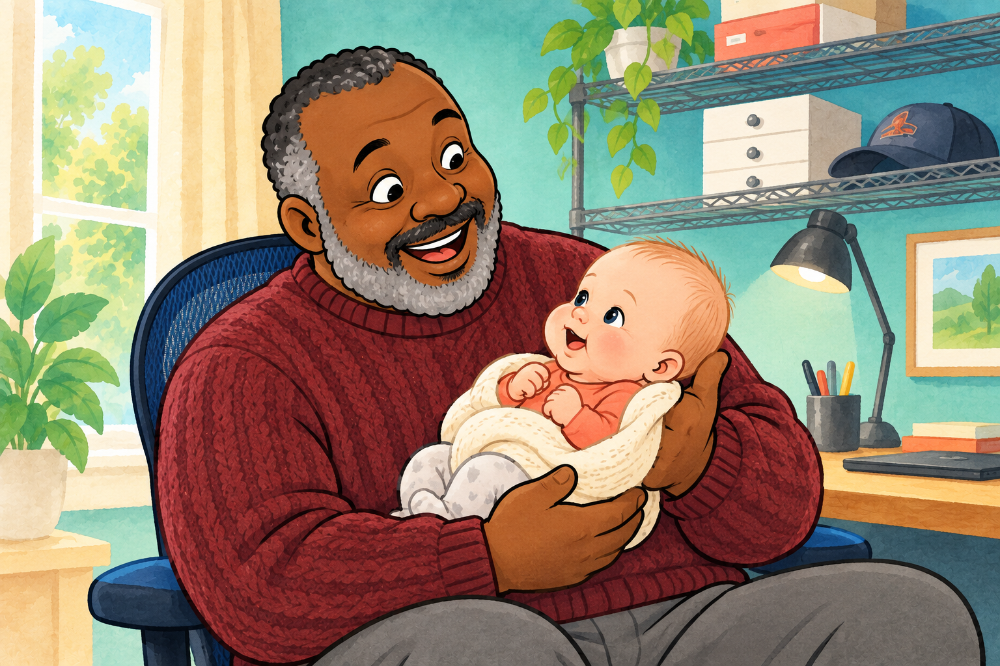
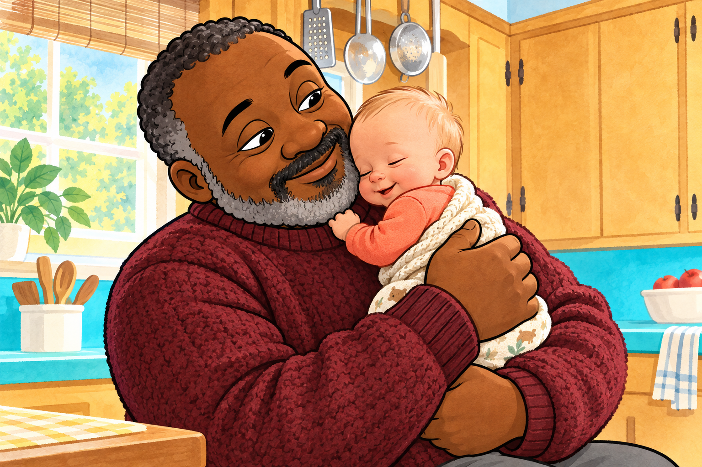

Motion storybook
$0–$10
Animate the finished frames with pans, zooms, dissolves, light, exposure flashes, and strong sound design.
- Most consistent faces and hands
- Fastest path to a finished film
- Easy to revise after narration
A practical guide for one 55–65 second film
“Grumpy Finds a Baby” already has the expensive part: six consistent, finished illustrations and a timed script. The smart production choice is a motion storybook with a few carefully chosen AI moments—not sixty seconds of freshly generated video.
Use a free editor for camera motion, dissolves, sound, and narration. Spend only on one or two shots that truly need character motion.

Choose the kind of motion
More generated motion is not automatically more charming. For a picture-book story, restraint can look intentional while also protecting character consistency.
$0–$10
Animate the finished frames with pans, zooms, dissolves, light, exposure flashes, and strong sound design.
$10–$35
Build the full film from stills, then generate only two or three 3–5 second image-to-video inserts.
$0, more time
Separate faces, hands, foreground, and background into layers, then keyframe them like paper puppets.
$35–$100+
Generate a moving version of every scene and rely on editing to connect the successful takes.
The retry multiplier
AI video rarely succeeds on the first try. Move the sliders to see how a six-shot plan grows once you budget for alternate takes.
6
Illustrative credit math as checked September 27, 2026: Runway’s credit guide lists Gen-4.5 at 12 credits/second; Pika’s pricing page lists Wan 3.0, 720p, 5 seconds at 33 credits/generation. Plans, model access, clip lengths, licensing, and rates can change—verify before paying.
A shot plan for the script
Every scene gets movement, but only the emotionally valuable beats need generated character animation. Keep the animation script and visual style guide open while you work.
Begin wide, drift toward the pair, add a quiet coo and a soft light change. A slow push-in carries the discovery.
AI optional: one blink and smile transition.

Crop low on the supporting hands, then keyframe upward to their shared gaze. Add sweater rustle and baby breath.
AI candidate: a 3-second eye-meet moment.

Use two crops from the same image: first the tiny hand, then Grumpy’s ticklish smile. Cut on the music.
AI candidate: the beard-touch hero shot.

Pan left-to-right across Grumpy’s features, timed to “nose, two eyebrows, a soft beard below.”
Skip AI: the scripted camera move does the work.

Hold like a portrait. Add two white exposure glows, two camera clicks, and tiny scale changes between “photos.”
Skip AI: a still frame is the visual joke.

Start close and pull back almost imperceptibly. Add a low heartbeat and let the final image hold for two seconds.
AI candidate: subtle blanket breathing only.
Finish before upgrading
Make a complete, watchable version before buying generations. Then you’ll know exactly which moments are worth improving.
Read naturally first. Let the real voice track determine each scene’s exact length. Audacity is free ↗
Place the six images, narration, and dissolves. Confirm the whole story works. Free Resolve training ↗
Keyframe one simple move per shot. Keep motion slow enough for young viewers. Position and Zoom guide ↗
Coo, cloth, clicks, room tone, and restrained music create life cheaply. YouTube Audio Library guide ↗
Generate only the beard touch or final breathing shot, then replace those moments. Prompting guide ↗
A lean toolkit
Start with a free editor. Treat AI video as a specialty tool you rent briefly after the edit proves what it needs.
Strongest all-in-one choice for editing, keyframes, sound, color, and delivery. The free version supports up to UHD at 60 fps.
A lighter no-subscription option with image sequences, keyframes, transitions, titles, audio tools, and proxy editing.
Easy for assembling narration, still images, simple motion, titles, and music when a full post-production app feels excessive.
Official video editor ↗The free plan currently includes 125 one-time credits and watermarked output. Use it to test a single image-to-video idea before subscribing.
Official credit guide ↗Current pricing supports one-time top-ups. Note that its Free and Starter tiers do not currently include a commercial license.
Official pricing ↗Use the original 1536×1024 illustrations as masters. Never regenerate a whole scene merely to create a camera move.
Open the animation scriptPrompt discipline
Image-to-video behaves better when the frame, characters, clothing, and composition are locked and the prompt describes only motion. This matches Runway’s official guidance ↗.
Stop conditions
If two retries fail, return to the still-frame version. A clean dissolve will look more professional than unstable motion.